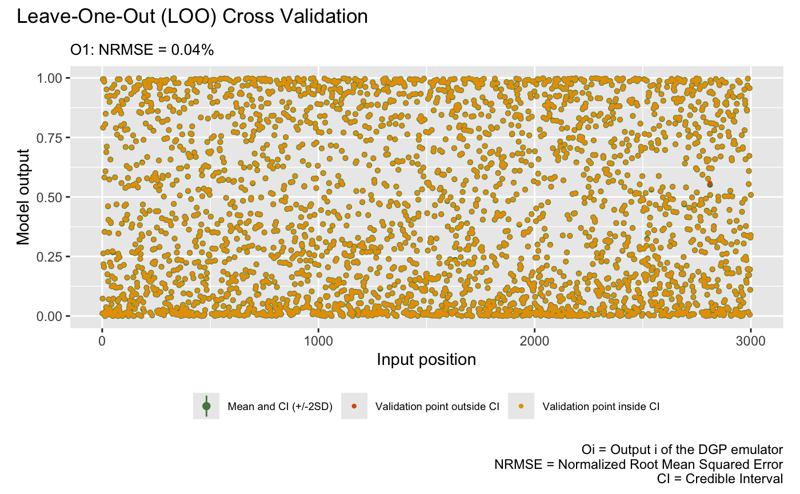

This vignette gives a demonstration of the package on DGP emulation of large-scale datasets.
Construct a synthetic simulator
We consider a 2-dimensional synthetic simulator with the following
functional form defined over [0, 1] and
[0, 1]:
f <- function(x) {
x1 <- x[,1,drop=F] * 4 -2
x2 <- x[,2,drop=F] * 4 -2
y <- 0.5 + ((sin(x1^2-x2^2))^2 - 0.5)/(1 + 0.001*(x1^2+x2^2))^2
return(y)
}We now specify a seed with set_seed() from the package
for reproducibility
set_seed(9999)and generate 3000 training data points:
X <- lhs::randomLHS(3000, 2)
Y <- f(X)Training
We now build and train a large-scale DGP emulator using a Vecchia implementation under our Stochastic Imputation (SI) framework:
m <- dgp(X, Y, vecchia = TRUE)## Auto-generating a 2-layered DGP structure ... done
## Initializing the DGP emulator ... done
## Training the DGP emulator:
## Iteration 200: Layer 2: 100%|██████████| 200/200 [02:20<00:00, 1.43it/s]
## Imputing ... doneValidation
After we have the emulator, we can validate it by the Leave-One-Out (LOO) cross validation plot:
plot(m)## Initializing ... done
## Post-processing LOO results ... done
## Plotting ... done
or the Out-Of-Sample (OOS) validation plot over 1000
randomly generated testing locations:
## Initializing ... done
## Post-processing OOS results ... done
## Plotting ... done
Performance tip
The Vecchia implementation in the package leverages the multiple
cores available on the machine for multi-thread computation. To optimize
performance, it is recommended to experiment with the number of threads
using set_thread_num(). The current number of threads being
used by the package can be checked with
get_thread_num().